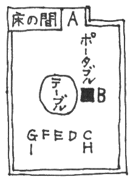

伊勢崎九太夫はある日二人の麗人から奇妙な依頼をうけた。心霊術の実験に立ち会ってインチキを見破ってくれというのだ。九太夫はいまは旅館の主人だが、もとは奇術師で名の知れた名手であった。奇術師の目から見れば心霊術なぞは幼稚きわまる手品で、暗闇でやるから素人をだましうる程度のタネと仕掛だらけの詐術にすぎないのである。熱海の旅館なぞでもこの心霊術師をよんで実験会をやるのが一時流行したこともあったので、九太夫はその向うをはって「タネも仕掛もある心霊術実験会」と称し、奇術師の立場から術を用いて心霊現象の数々を巧みに実演してみせた。白昼大観衆の眼前で術を行う奇術師から見れば暗闇で怪奇現象を見せるぐらいお茶のこサイサイというものだ。こういう経歴があるから心霊術の詐術を見破ってくれという依頼がきてもフシギはないが、しかし、こういうことを個人的に依頼するその必要が奇妙というものだ。
「御家族に心霊術にお凝りの方でもいらしてお困りというわけですか」
「ま、そうです。父が戦死した息子――私たちの兄さんですが、その霊に会いたいと申しまして、心霊術の結果によってはビルマへ行きかねないのです」
「ビルマで戦死なさったのですね」
「いいえ、戦死せずに生き残ったと父は信じているのです。なぜなら一ヶ月ほど前に兄の幽霊が現れてビルマで土人の女と結婚して子供が二人あるからよろしくたのむと父に申したそうです。マラリヤでこんなに痩せたなぞ申しました由で、たぶん幽霊が現れたとき死んだに相違ないから、孫をひきとりにビルマへ行きたい、それについては兄の霊をよんで土地の名や女の名を知りたいと申すのです」
「そうでしたか。しかし、心霊術はともかくとして、死ぬまぎわに霊魂の作用がはたらく例は往々実際にあるようですね。ですからお兄さんが一ヶ月前まで生きてビルマに土着しておられたのは本当かも知れませんよ」
「そうかも知れません。ですが、いまわのまぎわに知らせにでるぐらいなら、この九年間に手紙の一本ぐらいくれそうなものです。たぶん父の夢ではないかと思うのですが」
「なるほど。あるいは気のせいかも知れませんな。しかし、そういう理由からでしたら、息子の霊に会いたい、土地の名や女の名を知りたい、孫をひきとりたい、このお志はお気の毒じゃアありませんか。お父さまの気のすむように、そッとしておいておあげになっては」
すると姉らしい方がクスリと笑って、
「世間の人情はそんなものかも知れませんが、私たちの一族ではバカらしいだけなんです。子供たちを生みッ放しでろくにわが子らしいイタワリも見せてくれたことのない父が、ビルマのアイノコの孫に限ってひきとりたいなぞというのが滑稽なんです。イヤガラセなんでしょう。本心なら狂気の沙汰です。それともビルマのアイノコならライオンか山猫なみに育てるにもお金がかからず、気の向くままに放りだすこともできるからとでも考えているのでしょうか。ともかく私たちにとっては不愉快な出来事なんです」
「失礼ですが、お父様と
「高利貸の後閑仙七です。血も涙もないので名高い父ですが、わが子に対してもそうなんですよ」
「すると千石旅館の番頭の一寸法師の辰さんはあなた方の弟さんですか」
「いいえ、兄さんなんです。あれが次兄で、戦死したのが長男なんです。私たち二人は嫁いでますから働く必要もないのですが、一寸法師の兄はあのように旅館の客ひき番頭ですし、末の妹はファッションモデルをやっております」
姉が苦笑して語っているあいだ、妹はおもしろそうに微笑しているのである。
後閑仙七の名をきいて、なるほど、それなら話がわかると九太夫は思った。しかし、奇妙な兄妹たちだなと内心におどろいたのである。何より変ってるのは四人の兄妹の顔立が全然ちがっていることだ。姉の勝美は
だいたい他人に対して血も涙もない人間というものは親子の情に限ってすこぶるこまやかなのが一般の例だ。自分の血のツナガリだけが自分の城、安住の地というわけかも知れない。ところが後閑仙七は例外で、巨億の富を握りながら一寸法師の
次女のミドリは岸井という旅館の倅にお嫁入りしているが、先年の熱海の大火で類焼した。そのとき復興の資金を借りにミドリの舅が泣きついたとき、金貸しが商売だからお貸しはするが新築の建物をタンポに利息はこれこれと営業通りの高利を要求して一分一厘もまける様子がないのでケンカ別れとなった始末だ。勝美もミドリも類の少い美人であるから婚家に当り前に暮していられるが、さもなければ肩身がせまくて婚家に居づらいに相違ない。親類のツキアイなぞというものを仙七は生来知らない様子であった。冷血ぶりもここまでくればと仙七の人物を大いに認める者もあるほどだった。
この仙七が人々に評判をたしかめた上、日本一と名の高い吉田八十松という術師を大和の国からよぶことになった。心霊術には大道具が必要であるから、それをはるばる大和から運ばせて、滞在費謝礼等二万ナニガシの金がかかる。高利がついて戻る金でなければビタ一文出したことのない仙七がビルマからアイノコの孫をよぶため息子の霊をよぶためと称して二万ナニガシのムダをする。場合によってはビルマへ行って孫をひきとってくる。産院で孫のお産をさせるよりも何百何千倍のムダであるが、そのムダをも辞せぬコンタンはそも何事であるか。息子の一寸法師や三人の娘が他人以上にこれをいぶかったのは無理がない。子供たちにビタ一文やらぬためのコンタンではないかなぞと疑りたくなるのも当然だった。
「父からビタ一文だって当てにしている私たちじゃないんですけど、そのコンタンがシャクなんですよ。イヤガラセに心霊術のカラクリをあばいて鼻をあかしてやりたいのです。むろん父が兄の霊に会うという日は父ひとりで私たちが会うことはできないのですが、それだけでは私たち四人の兄妹が納得できませんと申しましてね。他に一日私たち兄妹主催の実験会を開いて父にも出席してもらうことを許可してもらったのです。むろんそのための費用やら余分の滞在費は当方持ちにきまってますが、心霊術師の旅費と大道具の運賃まで半分当方持ちという高利の条件でしてね。父との商談ですからそれぐらいは覚悟の上で、父の鼻をあかしてやるためならそれぐらいの金はだしてあげようと私や妹の主人たちも大へん乗気なのです。先生への謝礼も充分に致すつもりですから、ぜひぜひ出席願って心霊術のカラクリをあばいていただきたいのです」
「左様ですか。それでお話は判りました。私も心霊術の実験にはだいぶひやかしがてらでかけまして、あの奇術師の奴が来てるんじゃア今日の実験は中止だなぞときらわれるようになったものですが、大和の吉田八十松には幸いまだ顔を見知られておりません。日本一かどうかは存じませんが大そう評判の術師ですね。よろしゅうございます。お言葉のように私が出むきましてカラクリをあばき、また直後に私が同じことをしてお目にかけますが、さとられると吉田八十松が実演を致しませんから奇術師の伊勢崎九太夫が来てるなぞということは気配にもおだしにならぬように。心霊術に凝ってる誰それというように、よいカゲンに仰有っておいて下さいまし」
こうして九太夫も当日出席することに話がきまったのである。九太夫にしてみれば心霊術のカラクリを見破ることにはもう興が失せかけていたのであるが、ほかならぬ後閑仙七一族の血と金にからんだ一幕であってみれば改めて興はシンシンだ。眼前の姉妹にしても天性の美貌となにがしの気品、虫も殺さぬような優雅な風であるけれども、その性根の程はどんなものだか。勝美の言葉は落ちつきがあって物静かではあるが、語られている内容は甚だ異常で非人情なものではないか。その心を人の形に現せば一寸法師の客ひき番頭のような姿に化するのかも知れない。
「失礼ですが、皆さんは一ツ腹の御兄妹でいらッしゃいますか」
「一ツ腹に見えないのですか」
「四人の方々それぞれお顔に似たところがございませんのでね」
「よくよく似てないらしいですね。皆さんがそのように仰有るのですよ。ですが一ツ腹の兄妹なんです。似てないのは顔だけじゃありません。心も性格も全然別々なんですよ。至って仲も良くないのです。四人に一ツ共通なのは父を憎んでいることだけです」
姉がまだ言い終らぬうちから、妹はカラカラと小気味よげに笑いつづけた。九太夫も小さい時からの奇術師商売、日本はおろか海の外まで廻り歩いて、ちょッとのことでは物おじしないタチであったが、この姉妹には少々ビックリさせられた。心霊術のカラクリ同様、人間の心のカラクリも概ねタカの知れたものであるが、後閑仙七一族の心ばかりは人間なみでは計りきれないような感じをうけた。心霊術の実演よりも後閑一族の心のモツレを目にする方がどれぐらいまたとない
★
後閑仙七が息子の霊をよんでビルマの孫をつれてくるなぞというのは、どう考えても額面通りには受けとれない。そもそも仙七は長男を特別扱いしていなかった。一寸法師や娘たち同様ヤッカイ者扱いで、それでも大学へは入れてやった。すると召集をうけたから、名誉なことである、わが家の誇りでもある、大いにお国のために働いて下さいと大そう感動ゲキレイしたのはヤッカイ者が一人へって大助かりだという気持からの国家への感謝感激のアラワレであったろうと人々は推察した。他に特別の愛情を示した例はなかったのである。
そういう次第であるから、そもそも息子の幽霊が仙七に一目会いに現れたなぞというのが大いにマユツバ物で、もしも生き残ってビルマに土着したのが事実とすれば、日本へ帰って仙七の顔を見るのがやりきれないせいだろう。仙七の妻女は二年前に死んだが、そういう時世ではないからと云って葬式もだしてやらなかった。もっとも、勝美、ミドリ、糸子の姉妹三人はそれには至極賛成で、愛情のない葬式なんかださない方がよい、お体裁にナムアミダブツなぞ唱えるのは却って不潔でいやらしいという説であったが、一寸法師の辰男だけが不満不服をもらしたのは母に愛情が強かったせいであろう。母は一寸法師が宿の客ひきをして大荷物をブラさげてよたよたしているのを気の毒がっていた唯一の家族だったからである。
しかし、とにかく仙七がビルマの孫をひきとると称し、その所在を知るため長男の霊をよぶと称してはるばる大和から吉田八十松という心霊術師をよびよせることになったのは事実であるから、そもそも彼の真のコンタンは何であるか、兄妹そろって先ずもってこう考えたのは当然であろう。
ところが半年ぐらい前から仙七の様子にいささか変なところがあった。時々陰鬱な顔で放心しているようなことがあったのである。陰鬱なのは今にはじまったことではないが、放心を人に見せるような仙七ではなかった。また時々イライラ、セカセカしているようなことがあった。こういう様子も人に見せた仙七ではなかったのである。
だから仙七の心に何事か変ったものが生じていたに相違ないが、さればとて戦死した長男への愛情ということは考えられない。彼が長男の幽霊を見た、ビルマの孫をひきとりたいと云いだしたのはずッと後のことで、つまり何事か心に変化の生じたあげくに思いついた口実としか考えられないのである。
しかし、四人の兄妹が一様にこの心霊術の実験に反対のわけではなかった。糸子は反対どころか、むしろ大いに霊のお告げがあることを望んでいて、
「おもしろいじゃないの。お父さんの本当のコンタンは見当がつかないけど、あの冷血ムザンのケチンボーが何百万をもお金使って本当にビルマへ孫を探しに行くとしたら、おもしろいわ。そのときのケチンボーの顔を見てやりたいな。大いにケシかけて否応なくビルマへ行かせてやりたいと思うわ」
こういう考えであった。父の金など当てにしなくとも高給のとれるファッションモデルのことだし、まだ若いから屈託がないのだ。
これに反して深刻なのは一寸法師の辰男だ。彼が兄妹の最年長者でもあり唯一の男でもあるから、当然家をつぐのは自分だときめこんでいる。だから宿屋の番頭をしながらも経済界のことには勉強も注意も怠らず、株屋だの銀行員の客とみれば根掘り葉掘り訊きだして経済界の実相というものを身につけようと努力し、父亡きあと直ちに父の会社の社長におさまっても一ぱし通用できるように常住坐臥怠るところがないのであった。今は宿屋の客ひきだが未来は高利貸し会社の社長と心に堅く思いこんでいるのである。こういう辰男であるから、かりにも孫をひきとるとあれば衝撃は深刻で、
「ビルマに兄さんの子供なんかがあるはずないけど、オヤジがあんなこと云いだすからには、兄さんの奥さんと子供が必要なんだ。だから必ずビルマから兄さんの奥さん子供と称してビルマの田舎女とその子供をつれてくると思うね。どういうコンタンだか、オヤジの商法は一般の商法では見当がつけられないけど、たとえば財産を無智盲昧な異国の女子供名儀に書き変えるような必要があるに相違ないね。だから霊のお告げッて奴を通用させちゃア我々の破滅だね。特にぼくのような一寸法師には深刻だよ。ぜひとも心霊術のインチキをあばかなくッちゃア」
口中からのべつ泡をふきたてての必死の熱弁であり決意であった。
勝美とミドリも、父のコンタンは判らぬながらも、とかく兄の未亡人とその子と称するビルマ人に乗りこまれては迷惑だ。たとえ父の道具にすぎない異国人でも、かりにも兄の未亡人とその子とあっては自分たちに都合のよくなるはずはない。心霊術のお告げのインチキはぜひとも見破って無効にすることが何よりなのだ。
だから辰男らの九太夫にたのむところは絶大で、特に辰男は日どりの確定を伝えがてら九太夫の旅館を訪ねて、
「このたびはとんだお世話に相成ります。実は今朝早朝の銀河で心霊術の先生が到着いたしましてね。相談の結果、兄貴の霊をよぶ方を後廻しにいたしまして、今晩八時半から実験会の方を催します。どうぞ、よろしくお願い致します」
「左様ですか。承知しましたが、場所は？」
「父の邸で」
「それは珍しいことです。同好家の邸内ならとにかく、見知らぬ依頼者の実験に応じる時はたいがい旅館でやるものですが。運びこんだ大道具が大変でしたろう」
「それは大そうな荷物です。丸通便の宅送で相当な大荷物が一ツ。駅どめの荷物ときてはこれに輪をかけた大荷物で、おまけに当人自身が大トランク二ツぶらさげてきました。ただいまこれを開いて人を遠ざけ、自分一人でせっせと会場の準備を致しておりますが、宅送便の方がちょッとおくれて、ヒルすぎに到着いたしましたんで、オヤジと何やらモンチャクを起しておりました。この荷物は今日は使わないようです。これがいわゆる降霊術の七ツ道具かも知れません」
「そのために霊の対面が後廻しになったのですか」
「立ち入ったことは判りませんが、だいぶ父と相談いたしておったようです。父も大そう乗気でして、いつも熱海には土曜の夕方に来て月曜の朝に東京へ戻って、月曜からは東京泊りの習慣ですが、今回に限って木曜の夜こちらへ来て金土と出勤もせずに熱海泊りです。忙しい人間なんですが、よくよくでなくちゃアこんなことはありません。母が死んだ翌日ももう東京へでかけたんですからね。よほどの期待があるんですよ。いえ、何かただならぬコンタンがあるんですよ。さもなくちゃアこんな例外がある道理がありません。ぼくもね、ビルマから変な奴に乗りこまれちゃア先が真ッ暗になッちまうもんですから、旦那だけが頼みの綱で。どうか、まア、よろしくお頼みいたします」
三拝九拝のていで、くれぐれも頼んで戻ったのである。
その晩八時に勝美とミドリの車に迎えられて九太夫が後閑仙七の邸へついてみると、応接室には男の先客が二人いた。一人は勝美の良人茂手木文次、他の一人はミドリの良人岸井友信であった。岸井は同じ旅館業であるから組合の会合なぞで顔を合わせて知り合った間柄だが、茂手木の方は東京住いの勤め人であるから初対面だ。しかし一見したとき、ハテ、見た顔だなと思ったのである。
九太夫は商売柄、注意力、観察力、記憶力なぞが非常によい。ちょッと印象に残った顔は電車に乗り合わせただけの顔でも季節場所なぞと共にその顔を忘れないようなタチである。茂手木を一目見て、これは軍隊で見た顔だと思った。五尺八寸もある大男、ガッシリした骨組、四角のアゴ、鋭い眼。
やがて九太夫はアリアリ思いだした。支那で見た少尉だ。大学をでたばかりの鬼少尉だ。人斬り少尉だ。便衣隊の容疑者とみると有無を云わさず民家の住人をひッたてて得意の腰の物で首をはねていたという鬼少尉。強盗強姦にかけてはツワモノで、彼は部下に大モテだった。部下は余徳にありつけるからだ。
九太夫は戦時に奇術師として諸方に慰問旅行をした。そのとき中支の奥の日夜銃声の絶えないところで、この少尉の部隊を慰問した。彼が部下をひきいて討伐にでかける姿を見たのである。そして彼の怖るべき所業の数々をむしろ讃美して語る人々の話をきいたのである。
当然戦犯として捕えられて然るべき人物だが――と九太夫は考えた。こういう人間に限って急場の行動迅速で、雲を霞と三千里、昨日の敵は今日の友、めったにバカを見ることがないのであろう。
「たしか中支の奥でお目にかかりましたなア。私は奇術の慰問にでかけたんですが、慰問のはじまる前に討伐におでかけでした。その名も高い鬼少尉と承りましたが」
「いえ、とんでもない。ぼくは内地の部隊にゴロゴロしてたんです」
茂手木はプイとソッポをむいて、つまらないことを云うなとばかり、タバコの煙をプウプウふいた。
★
奇術は二階の十五畳の座敷。着席して九太夫はおどろいた。
床の間を残して全部暗幕をおろしているのは当然だが、天井まで暗幕でおおうている。下はジュウタンを二重にしきつめているのである。
これではどんなカラクリでもできるではないか。天井の暗幕の上からも、ジュウタンの下からもコードやヒモの細工ができる。このように暗幕とジュウタンで完全なトーチカをつくるのはもっぱらその本拠ないし同類の邸内でやる時で、見知らぬ出張先ではこれほどのことはやらない。むしろ、やれないのである。なぜなら本拠や同類の家とちがって、見知らぬ依頼者の家ではいろいろと仕掛けを改められる怖れがあるからだ。
その代り、このように暗幕のトーチカをつくれば、相当の荒芸がやれる。たとえばユーレイをだすこともできるし、テーブルやピアノなぞを空中へ浮きあがらせることもできる。しかしそれにはそれだけの仕掛けがいるから、改められればバレるのである。
部屋の中央にまるいテーブルがあった。しかし術者はそのテーブルに坐るのではなく、床の間とならんでボックスがあるのだ。そのボックスは後と左右の三面と上下が板張りになっており、客席に向いた正面だけが暗幕のカーテンになっている。その中にイスがあった。術者はそのイスに坐すのであろう。一般にイスに坐して手足を縛りつけるのが例である。この縄をぬけるのは簡単だ。九太夫は十秒前後でできるのである。まるいテーブルの上にはメガホンやハモニカや人形やラッパや土ビンや茶ワンなぞがのせられていた。
「このジュウタンも吉田八十松さんがわざわざ持ってきたのですか」
九太夫はフシギに思って辰男にきくと、
「いいえ、このジュウタンは当家のものです。暗幕と箱とイスとテーブルの上の物品とが術師の物です」
「テーブルは？」
「あれも当家の物です」
テーブルの側面にポータブルがおかれている。それも術師のポータブルであった。術に入る前後に音楽をかけるのである。
すると中央のテーブルにだけは仕掛けがない。九太夫は術師の姿が見える前にその重さをはかってみた。かなり怪力の九太夫が辛うじて両手で持ち上げる重さであるから、ガタガタうごかすぐらいが関の山であろう。
仙七と吉田八十松が現れて席についた。するとその後から糸子がアタフタ現れて、
「ワー。間に合った。ちかごろ土曜日が忙しくッてね。あッちこッちの坊やから誘いがかかるし。ヤレ、ヤレ」
ドッコイショと坐った。見るとすでに吉田八十松はボックスの中のイスにかけ、仙七が手首を縄でいましめ、イスにくくりつけた。足には縄をかけなかった。
「念のため、見においで」
仙七の言葉に辰男と糸子が立ってたしかめたが、辰男は自分でもう一巻余分にイスにまきつけた。そしてカーテンをおろし、
「あんまりきつい方じゃないが、まアまア」
と感服しない顔でもどる。すると仙七はすでにちゃんとポータブルを前に坐っていて、
「術の前後に音楽をならす。術者はこの音楽中に徐々に術の状態に入り、また音楽中に徐々に術の状態からさめる習いになっておる。音楽をならす場合を心得てるのは私だけだから、これを私がやる。曲はユーモレスクだ。誰か電燈を消しなさい。タバコを御遠慮を願う」
そのために灰皿の用意もなかったのだ。タバコを吸ってる者が慌ててタバコの箱で火をすり消したりしているうちに、糸子が立って電燈のスイッチをひねった。仙七がよその座敷や廊下の電燈を消しておいたので一瞬にして真の闇になってしまった。テーブル上の夜光塗料をぬった品物だけが浮いて見える。
「オーウ」
という遠い山のフクロウのような声がきこえた。はじめて発した吉田八十松の声なのである。するとそれにつづいてポータブルが廻りはじめた。あまりその場にふさわしくないややカン高の音楽であった。
その音楽が終りの方に近づいた一瞬、九太夫にとっては思いがけないことが起った。テーブルの向う側にドーンと重い何かが落下したからである。テーブルの上のものではない。それはそのまままだ動いたものがないからである。かなりの重みの鉄のタマのようなものらしくドーンと落ちてころがったようだ。つづいて、
「キキキキキ、ガガガガガ、ガンガンガン」
しッきりなしに不快きわまる大音を発するものがテーブルの向う側を動きまわりはじめた。これもテーブルの上のものではない。目に見えないものだ。何か子供のオモチャのたぐいであろうか。しかしオモチャの金属質の高音をさらに何倍もけたたましくしたようなもので、怪物どもの泣き声とも笑い声とも怒り声ともとれるような醜怪な音響だ。部屋いっぱいにはね狂うように充満して響きたつのだからたまらない。
「ウム」
「ウーン」
諸方で誰かが呻きを発した。二三人にとどまらない。一人の呻きをきくと、ひきずられて思わずうめかずにはいられなかったのである。
怪音が三四十秒つづいて終ると、すでに音楽も終っていた。にわかにハモニカが宙にういてプープー鳴りはじめた。人が吹いているのではない。なぜならハモニカは人の頭よりも高いところをクルクル舞い廻っているからである。突然メガホンも宙を舞いはじめた。つづいてラッパが舞い上った。三ツ一しょに目まぐるしくクルクル舞い狂ったあげく、にわかに三ツ同時にテーブルの上へころがり落ちたのである。
今度は笛が舞い上った。そして物悲しげな笛の音がかすかに宙から起ってきた。しかしそれも人が吹いているのではない。なぜなら笛は木から木へとぶムササビのように右から左へ左から右へ絶え間なくはげしい運動をつづけているからだ。人形が舞い上った。物悲しげな笛の音はなおもかすかに断続している。にわかに二ツが空中高く舞い上って落下した。すでに土ビンと茶ワンが舞い上っている。二ツがカチカチふれあう。はなれる、またふれあう。土ビンが傾いて茶ワンに水をつぎこんでいる。土ビンと茶ワンの上下の距離がはなれたり近づいたり。土ビンと茶ワンが一回転して前へ落ちた。
人々はカタズをのんで待ちかまえたが、心霊現象はそれで終っていたのである。人々はいまにテーブルが動きだすかと特にそれを待っていた。もっともそのテーブルには夜光塗料がぬってないから、動きだしてもドスンバタンと音をたてるぐらいのものであろう。しかし九太夫がそのテーブルを改めたのを人々は見ているから、特にその期待が大きかったのである。
しかし、いつまでたっても何事も起らない。また終りの音楽も鳴りださない。とうとうシビレを切らせて、人々の中には身動きをはじめたりセキばらいをする者も現れた。するとボックスの方からも、
「オーウ」
と例の遠い山のフクロウのような声がきこえてきた。しかし何事もないので、また、
「オーウ」
と同じ声が起った。音楽をサイソクしているらしいのである。
「どうも、おかしい。どなたか、電燈をつけて下さい」
九太夫がセカセカした声で叫んだ。誰か立った。電燈がついた。電燈をつけたのは糸子であった。見物席の一同には変りがない。ただ一人、一同に離れ、テーブルの側面にポータブルに対している仙七だけが俯伏している。その背中から真上へ突きでているものがある。短剣のツカだ。短剣はほぼその根本まで胸を突き刺しているのである。仙七はもう動かなかった。一同が抱き起してみると、彼はすでにことぎれていた。
★
次に各人の証言のうち主なるものを記する前に、当夜の各人の位置について図解を示しておくことにする。

Ａボックス（即ち吉田八十松） Ｂ仙七 Ｃ茂手木 Ｄ岸井 Ｅ九太夫 Ｆ勝美 Ｇミドリ Ｈ糸子 Ｉ辰男
糸子の証言
――この短剣に見覚えがありますか
――あります。たしか応接間の飾り棚の中に人形だの船の模型だのガラクタ類と一しょに置き並べてあったものです。西洋の短剣で高価なものではないようです
――応接間にはガラクタを並べておくのですか
――商売が高利貸ですから差押えで仕方なしにガラクタがふえるんですね。家中どの部屋も床の間の違い棚や飾り棚の中にガラクタだらけなんです
――いつなくなったか覚えていますか
――そんなことは知りません
――皆さんが坐っていた場所はこうでしたね
――こうだったと思います
――誰かがお父さんの方へ歩く気配に気附きましたか
――全然
――お父さんの刺された気配は
――全然
――あなたと兄さんだけが後方に坐っていたのですね
――兄は立ってたんですよ。坐れば見えませんから。立ってたから後でよかったんでしょうね
九太夫の証言
吉田八十松は名手の名のある人ですが、旅先のことで人をアッと云わせる芸はできない相談だったのですね。それでもわずかな材料を生かして意表をつく苦心を払ったようです。たとえば中央にテーブルをすえ、下にはジュウタン、側面と天井には暗幕をはりめぐらして、いかにもテーブルをあげてみせるぞと云わぬばかり、ジュウタンの下や暗幕の上から側面すべてコードや紐の仕掛け充分の様子にこしらえておいたのです。そのくせ、その仕掛けは何一つほどこしておかなかったのです。これはたぶん見物の者がそれを改めることを予期して裏をかいたのかと思いますが、あるいは被害者からでも私が参観にくることを前もって知らせをうけて意表にでた用意かも知れません。したがってボックスの中からカラクリをやる手法も用いません。ボックスの内から外へ通じる仕掛けは一切ほどこさぬ用心をしていたのです。したがってあの人が行ったのは縄ぬけして前面へでて曲芸をやることだけでした。この曲芸も最初にちょッと意表をつきましたね。かなり巧妙な方法でした。夜光塗料の品物でなしに、まず四ポンドぐらいの鉄丸と音響仕掛けの道具を投げたんですね。鉄丸の落下音も相当なものでしたが音響仕掛けのガラガラガラという怪音には悩まされましたよ。むろんこれには紐がつけてあって、あとでたぐりよせてポケットへなりボックスの中へなり隠しこむのです。こうしてガンとおどかしておいて夜光塗料の品々をあやつりはじめたわけですが、え？ ハモニカや笛は吹けなかったはずだと皆さんが仰有ってるんですか。それはあのハモニカや笛は吹ける道理がありません。別のハモニカ別の笛を吹いてるのですよ。口にくわえッ放しにね。夜光塗料のぬってない別の物、ポケットの中の品物です。で、結局私には後閑さんの殺されなすッた音をききわけることができなかったのですが、たぶんあのガラガラの最中ですね。あの音響の最中に皆々悩まされたあげく方々に溜息や呻き声が起りました。たぶんその一ツが被害者の苦悶の呻きではなかったでしょうか。うまく重なったものですよ。偶然です。たぶん犯人は音楽がはじまると同時に行動を起し被害者の後へまわって音楽の発する位置をたよりに狙いをつけていたものと思われますが、たまたまガラガラのチャンスを利用して非常に安全に目的を達することができたのですね。ガラガラがなくたって目的は達せますが、いくぶん危険ですね。苦悶の声や何かで早く判ってしまうでしょう。もっとも電燈をつけるまでには間があるでしょうから、自分の元の位置へ戻る時間に不足はないと思います。しかし呼吸の乱れや何か、隠しきるには一苦労も二苦労もしなければならぬ道理です。犯人の心当りですか。それがとんと分らぬのです。注意はもっぱら心霊術の方に吸いとられておりますし、吉田八十松さんがあれだけ歩きまわっても音のしないように仕掛けたジュウタンですから、忍び足の犯人の気配が分るものではありません。それが判るぐらいなら心霊術の縄ぬけの手品がすぐ判る道理じゃありませんか。見物人には吉田八十松さんが縄ぬけして前の方まで歩いてきて手品の数々をやっているとは気がつかないのですからね。事件発覚後の各人の挙動についてですか。左様ですね。各人一様に茫然たる有様という以外に特別の不審の者はおりませんでしたね。警察へ電話をかけに糸子さんが外へでました。しかし他の者一同はいましめあいました。警官の到着まで外へでた者はありませんでした。誰しも疑られるのはイヤですから、外へ出たいと云った者もおりません。そうこうしているところへ、吉田八十松さんが仕方なく自分で縄をといて出てきました。あの人にしてみれば自分で縄ぬけできるのを人に知られたくないわけですが、様子が判ってみればいつまでもボックスに鎮坐していられなくなったのでしょう。もっとも、殺人どこ吹く風というように、手首をもんでいるばかり、一言も喋りませんでした。ちょッとした変人ですね。心霊術師としては奇術の腕がたしかです。私が見たうちでは一番と申せましょう。夜光塗料をぬった道具類のさばきなぞはあざやかで、ハモニカを口にくわえて吹きながら、他のハモニカとメガホンとラッパの三ツを同時に空中に使いわけたのは
茂手木の証言
仰有るように、ぼくが被害者に最も近い位置にいたわけなんですが、大変な音響でしたし、奇術にばかり心をとられていたものですから、人の気配も、被害者の刺された気配も、全く気がつきませんでした。え？ 犯人の心当りですッて？ あの場合、誰だって後閑さんを殺すことができましたよ。あれぐらい人殺しにお
吉田八十松の証言
あの人が奇術師の伊勢崎九太夫ですか。それじゃアどうも嘘をついてもはじまりません。あの人の名は心霊術の仲間うちでは評判でしてな。こまったお方が現れたものですな。それはもうあの方の仰有る通りで。縄をぬけて前方へでて曲芸をやったわけですな。丸一小鉄をへタにした曲芸を暗闇でやるわけなんです。いえ、あれだけが心霊術ではありません。他にたとえば翌日やるはずになっておった幽霊をだして物をきき物を語らせるというのがむしろ心霊術の主眼ですが。え？ その種あかしですか？ そればッかりはカンベンして下さい。それを知られてしまえば元も子もなくなるのでしてな。ま、私は私なりに発明した手法などがありましてな。他の業者にもそれを知られてしまえばこんな不都合はありませんでな。え？ あの晩のガラガラですか。あれも私の新作でして、ありきたりの手法に満足しなくなった見物衆のドギモをぬくために近ごろ発明いたしました。今回ははじめての依頼者ですから、敵地へのりこむ心得で新作品を一二用意して参ったのですが、それが犯人に利用されるとは思いがけないことでしたな。鉄丸の目方は三ポンド半です。え？ 伊勢崎さんは四ポンドぐらいの鉄丸と仰有いましたか。おどろいたお方ですな。何もかも見通しじゃアありませんか。とてもかないません。いえ、犯人が私の方を廻って行ったような気配はありませんですな。左様、私の位置が犯人には判るまいと思われますので、私をすりぬけて行くことは不可能ではありますまいか。もっとも伊勢崎九太夫さんなら、それはできます。私のいる位置などあの方にはタナゴコロをさすようでして、次にどこ、次にはどこへということまで暗闇の中でちゃんとお判りでしたろう。その他の方々には無理でしょうな。へえ、当日、後閑さんと最も多く話を交したのは私だったかも知れませんが、みんな心霊術に関することばかりでして、あの方の身に危険が迫っているようなこと、むろん一言も仰有る道理がありません。なんしろ初対面でしてな。
辰男の証言
――年齢は
――三十一年五ヶ月です
――お前は父を憎んでいたそうだな
――大ざっぱに分類すれば、好きな父ではありませんが、憎むといっては言いすぎじゃアありませんか
――何億の財産がころがりこんで、うれしいだろうな
――それは悪い気持じゃありませんよ
――素直に白状してしまえ。みんな判っているのだ
――何が判ってるんです。ぼくが殺したと仰有るのですか。証拠があったら見せて下さい
――いまに見せてやる。時にお前はどっちを廻って行ったのだ。糸子のうしろの方だな
――ぼくは動きませんよ
――ミドリはお前が立ち去る気配に気づいたと言っておるよ
――冗談でしょう
――糸子も同じように証言をしている。かたわらを通りすぎたのは子供のような感じだったと云ってるぞ
――暗闇のことが判るものですか
――暗闇だからバレるはずがないと思っているのだ
――考えてみて下さい。父を殺さなくッたッて、やがて父が死んだあかつきは財産はぼくの物ではありませんか。わざわざ殺す必要があるものですか
――ビルマの孫がくると財産はお前の物ではなくなるのだ
――そのための心霊術実験会ではありませんか。伊勢崎さんは絶対にインチキだから心配するなと力をつけて下さっています。この実験会の結果、父のビルマ訪問が不可能になるのを信じていたのですから、父を殺す必要はないのです。だいたいぼくはシガない客ひき番頭ですが、ともかく暮しにこまらない定職があって多少の貯金もあるほどですから、今すぐに父の財産をつぐ必要なぞないのです。老後安穏に暮せるだけで結構で、今のうちはその希望とともに客ひき番頭でノラクラ暮している方がむしろ生きガイやハリがあってたのしい毎日だったんですよ。今すぐ父のあとをつぐというのは、むしろ怖しくて望ましいことではなかったのです
――伊勢崎九太夫は吉田八十松の心霊術をほめてるぞ。日本一だと云ってる。ビルマの孫の所や名を言い当てるのは不可能でないとほめちぎっているのだ
――ぼくはそんなことは初耳ですよ。伊勢崎さんが心霊術のインチキをあばいて下さるものと確信していたのです
――お前の着物に血がついてたぞ
――それは父を抱き起したのがぼくですから、血がついても仕方がありません。あの場に居合わせた人々の中で父を抱き起す役割は当然ぼくがひきうける以外に仕方がないではありませんか
――お前はバカ力があるんだなア
――客ひきですから年中荷物をぶらさげて歩いてるせいでしょう
――お前は坐っている人を立ったまま力いっぱい突くことができるんだからなア
――それはできるでしょう。やろうと思えばね。しかし、ぼくはやりません。そんな危い橋を渡らなくっても、待ちさえすれば自然にころげこむ財産ですからね
――その一ツ文句で云い逃れができるつもりか
――真実には多くの言葉は無用ですよ。ぼくがあせって父を殺す必要は毛頭ないのですから、それで言葉はつきてますよ
――頑固な奴だ。今日は帰してやるから一晩ゆっくり考えてみるがよい
谷村警部の補足せる報告。
兇器は後閑邸応接間の短剣。サヤは死体のかたわらに発見せらる。証拠物件はこの一ツのみ。鑑識の結果、指紋の検出を得ず。
目下の状況に於ては現場に同席せる全員を容疑者と目する以外に有力なる証言を得ず。位置の関係より、辰男、茂手木、糸子に最も可能性ありとするも、他の四名を不可能と断ずる根拠またなし。以上
★
翌日曜は一同足どめをくらッたまま何事もなくて、月曜に至って後閑邸へ参集を命じられた。午後六時半には日が暮れるから一時間半くりあげて七時から前々日と同じことを実演してみることになったのである。
各人の後閑邸到着から実演室への着席まで順を追うてやるのだが、ここらへんで便所へ行ッたッけ、お茶が来たッけ、そうだったかなアというアンバイで埒があかない。威勢のよい茂手木はとうとう怒ってしまった。
「オレは勤め人だぜ。熱海へ足どめしてくだらないことをさせて、だいたい警察のやり方がなってやしねえや。最新の科学を利用してテキパキと物的証拠がつかめねえのかやい。銭形平次時代みたいな実演会なぞ今どきやるとは何事だ」
「ま、キミ、我慢して今晩だけつきあってくれたまえ。明日からは自由だから」
というようなわけ。
まず見物人が着席する。現場は死体がないだけで、そっくり以前のままである。吉田八十松はこれまた哀れで、仙七とどこでどうして何を喋ってどこを通ってと相手がいないのに相手のぶんまでやらされて、ようやく実演室へたどりつく。つづいて糸子がアタフタかけこんできて、
「間に合ったア！ バカバカしい！」
ヤケを起して、ころげまわっている。いずれも先日同様のもしくは類似の服装であるが、茂手木と岸井は洋服に靴下、吉田八十松も洋服に靴下ばきで九太夫と辰男が足袋である。女もむろん足袋か靴下で、素足の者は一人もいない。
警官が代って吉田八十松をイスにしばりつけ、いよいよ実演の段取りとなったが、今度は八十松が怒ってしまった。警官たちを睨みまわして、
「あなた方、どうしてそこいらに立ってなさるんです。それじゃア実演ができません。とっとと引きとっていただきたいね」
「警官が立ち合わなくちゃア実演の意味をなさんのでな」
「そんなにたくさんアチコチにいちゃア邪魔で仕様がない」
「この警官たちが皆さんの代りに被害者の方へ歩いたり、その気配をききとめたりする役目なのだから仕方がないよ」
「しかし、あなた、私の方の側にいちゃア、鉄丸を投げたり、ガラガラを投げたり、いろいろなものを上へ投げたり振り廻したりするのだから、それじゃアとうてい実演するわけにいきません」
「それはもッともだ。そっち側の警官は不要なのだから、邪魔にならない隅の方へ、その床の間のあたりへ集まるがよい」
ようやく準備ができた。被害者の方へ忍んで行くのは辰男、茂手木、糸子の三名の代人だけらしく、三名のうしろのそれぞれの位置に警官がいる。また、岸井、九太夫、勝美のうしろは無人のところを、ここには聴き役の警官が座についている。
糸子が電燈を消してきた。
「オーウ」
という八十松の遠吠え。警官の隊長が代りをつとめたらしくポータブルが鳴りだした。それからは先夜そのままである。さすがに八十松の芸は巧妙で、時間の間隔まで間髪の差もなく、舞い廻る品々も同じ場所に同じ動きを示したように思われた。
こんなことをやってみたって、実はムダにすぎないのだ。心霊術に注意を集中している場合と他の物音に注意を集中している場合とではその差甚大ではないか。甚大すぎる差と云えよう。それですら物音はほとんどききとれなかったのだから、この実演の結果は全員の容疑が一様に深まっただけで、特定の一人の容疑を深めることは完全に失敗に終ったのである。
特定の一人と云えば、特に茂手木の代人はガラガラが鳴りはじめてから行動を起し、鳴り終る前に行動を終えてなお余裕シャクシャクたるものがあったのだが、かかるガラガラの鳴ることを予期しうるはずもなく（九太夫すら予期しなかった）またその鳴りつづく時間を予知できるはずもない。だからそれを容疑の理由にすることは無理であった。
実演を終えると辰男は容疑者組をひきとめて、
「一パイやろうじゃありませんか。オヤジのガマ口の中のものを失敬しても、みんなで一パイやるぶんには差支えはありますまい。今夜は当家カイビャク以来の宴会でさア」
と云っても大したゴチソウはでやしない。そのへんのテンヤ物をとって酒宴をやった。警官に一パイどうぞなぞと誰一人云う者がいない。容疑者ともなれば皆々ムカッ腹をたてるのは当然で、なまじお世辞を使ったばかりにかえって怪しまれては物騒と、知らぬ顔をしている。
警官たちはなおしばらく現場の方で何かやっていたが、やがて署長が現れて、
「ヤ、皆さん、まことに御苦労さまでした。さぞイヤな思いをなさッたでしょうが、もう今夜限りで足どめは致しません。東京の方は東京へ、大和の吉田さんは大和へ、それぞれ遠慮なくお帰り下さい。現場の幕や道具類は用がありませんから御随意に荷造りして下さい。ただジュウタンだけは血がついておって証拠品ですから暫時警察でお預りいたします」
「ジュウタンとテーブルだけは御当家のものです」
「そうですか。それではなおさら都合がよい。奥に二個荷造りしたままの荷物がありますが、あれは吉田さんお使いにならなかったのですか」
「あれは特定の霊をよびだす時の道具立てでして、実は翌る晩に用いることになっていたのですが、その用がなくなったわけです」
「道具立てがなくちゃア幽霊はでませんかな。心霊術の幽霊はホンモノよりも芝居の幽霊に似ているようですな」
「ま、そんなわけです」
「では、失礼」
警官一行はチョッピリと心霊術に皮肉をのこして立ち去ったのである。警官にしてみればイマイマしい心霊術めというわけだろう。こんなものがなければ、こんなヤッカイな事件は起りやしなかったのだ。
商売熱心の九太夫はふと気がついた様子で八十松に向って、
「吉田さんにお願いがあるんですが、心霊術ではさすが日本一と評判の高いあなた、実は私、特定の霊をよぶ方にはあまりめぐりあったことがございませんのでね。ひとつこの機会に、妙な因縁ですがこうして変な風にジッコンを重ねた御縁に、今晩特定の霊をよぶ方の心霊術を見せていただけませんか。もちろん謝礼はいたしますが」
すると糸子がおどりあがって、手をうってよろこんで、
「すばらしいわね。お父さんの幽霊をだしてちょうだい。犯人をききましょうよ」
八十松は頭をかいて、
「あの暗闇じゃアお父さまにも犯人は判りますまい。それに私が犯人を知らない限り幽霊も犯人を知らない規定になっておりまして、ま、あなた方には白状しておきますが、さっきの署長の言葉の通り、ホンモノよりも芝居の幽霊に似すぎているんですな。とても伊勢崎さんにお目にかけられるような芸ではありません。それに、こう申しては失礼のようですが、この八名の中に一名の真犯人がいることだけは確かでして、どなたがそれとは分りませんが、私としましても幽霊の術を見せてあげるような気分にはなれませんでな」
「当然。当然。だいたいこんな晩に幽霊をよぶ術をやろうなどとは不謹慎千万だ」
茂手木が大きな身体をゆすりあげて、怒り声で喚いた。糸子は怒って、
「こんな晩て、どんな晩なのさ。たかがオヤジが殺されたぐらい。セイセイして当分結構な晩じゃないの」
「そうかも知れないわね。私もそう悪い気持じゃないわ」
とミドリが糸子に加勢した。そして、こうつけ加えて云ったのである。
「私はね。あの心霊術の音楽が真ッ暗闇で鳴りだしたとき、いまピストルか短刀があったら父を殺してやりたいと思ったのよ。そのうちにガラガラが鳴りだす。ええ、畜生め、無念だなアと思ってね。思わず無念の呻き声をたてたのよ」
何屈託のないノンキな顔だ。九太夫はあきれて、
「ハア。そういう真剣な呻き声もあったんですか」
「そうなんですよ。私の心霊作用が犯人さんにのりうつッてね。つまり私は共犯かな」
「やめとけ！」
一寸法師が立ち上ってジダンダふんで怒りだした。酒がまわって真ッ赤なホーズキのような顔である。怒りがなかなかとまらぬらしくアチコチ駈けずりまわってはジダンダふんでいる。
こうして怒りを自制する方法を常用しているのかも知れない。糸子はそれをおもしろがって眺めていたが、
「天下一品の兄貴だよ。とても肩身がひろくッてね。熱海の駅で客ひきしてる一寸法師の妹を知らねえかア。時々タンカをきってやるのさ。私の坊やフレンドにね」
「ヤイ、帰れえ！ みんな帰れえ！」
「お前がでてけえ！」
「ヤイ、糸子！」
「なんだい、ジダンダふんだって一メートルじゃアはえないや。クビをくくるにはカモイが高すぎるし、いい身分だなア」
「ウーム！」
一寸法師は益々真ッ赤になって必死に我慢しているのである。
「ではお先に」
と九太夫は腰をあげて、急いで戻ったのである。
もっとも九太夫は決して不愉快だったわけではない。なんとなく憎みきれない一族だ。むしろ好意を感じた方が強かった。どことなく天真ランマンなのである。ヤケのヤンパチの底をついているにしても。
★
九太夫はねられぬままに犯人は誰かということについて考えてみた。
あの暗闇ではみんなが殺しに行くことができる。そして殺すことができる。しかし奇術師として考えてみても、殺してから元の位置へ誰にもさとられずに、ぶつかったり、さわったりせずに戻ってくることが難物だ。人と人にはさまれた位置の者が特に困難である。奇術師の立場からでも相当に難物だ。ところが電燈がついたとき、一同元の位置にいたのであるから、人と人にはさまれた位置の者、特に九太夫その人の両側は犯人の容疑から取り除いてもよろしいようだ。実際問題として不可能に思われるのである。その両側は岸井と勝美であった。
両端の茂手木とミドリ、糸子と辰男は元の位置へ戻るのが割合楽だ。しかしミドリは離れすぎている。そして辰男の前面へ戻ってこなければならぬ。前面へ戻るのと後へ戻るのでは割がちがう。後の方はいい加減のところで間に合わせて折を見てなんとでもすることができる。前方の人々は後に目があるわけではない。おまけにミドリは着物であった。ミドリの位置からではむしろ前方の隅をまわると仕事は楽なのだが、心霊術とは何物か、その正体を知らないものが術の行われている前方をまわることができるはずはない。これも容疑者から消してよかろう。
結局、茂手木と糸子と辰男である。糸子はしょッちゅう出入していた。電燈を消したのも、つけたのも、事件発覚後電話をかけに部屋をでた唯一の人物も糸子であった。糸子は八頭身ぐらいの立派な身体で、相当に腕力もありそうだから、ツカも通れと短剣を刺しこむことが必ずしも不可能とは云えない。電燈を消して戻ってくるとき隠しておいた短剣を持ちこむこともできたはずだ。電燈をつけに出たとき、電話をかけに出たとき証拠の品を隠すこともできる機会にめぐまれている唯一の人物なのである。糸子の位置が殺して戻るに最も有利で、一同の後へ戻ればよいのだから、そしてその間に人の介在が皆無なのだから、彼女の場合戻り道でしくじる危険は全くなしと断じてよい。有力な容疑者だが、動機が稀薄だ。
茂手木も被害者への最短距離だから、往復の不自由は他に比較して甚だしく少い。岸井と二人だけで応接室にいた間に短剣を盗みとるチャンスも有り得たろう。彼は戦地に於て人殺しを常習にした怪物だから、あの好条件にめぐまれて仙七を一突きに刺し殺すのは久万ぶりの悦楽ぐらいにしか感じなかったかも知れないのである。動機はこれも稀薄だが、性格的に人殺し的なのだから、これは有力な容疑者である。
辰男は動機の上から最大の容疑者である。なるほど殺さなくとも自然に自分の物になる財産だということは一応筋が通っているが、正しい筋の裏側にはそれと同量の逆が含まれているのが当然である。殺さなければ財産を失う怖れというものは一ツや二ツの原因理由に限られているものではなくて無数の理由によって生じうることが可能なのだから、かえって一応筋が通っているだけ言い訳にならないと云えるのである。
ただそのような怖れの生じる理由が実在したかということが問題だ。辰男も糸子も同様後列であるから糸子についで、往復に危険の少い位置である。とにかく後列は前列よりも甚だしく有利で、おまけに後列は二人だけで隣りがないのだからなおさらだ。最短距離の茂手木よりも辰男の方が往復に有利と見てよい。辰男の位置の場合、遠距離ということは苦にならないのである。暗幕に沿って歩けばよいのだ。
こうしてみると、動機の上でも位置からでも辰男が最有力の容疑であるが、糸子の嘲りに対してジダンダふみ駈けまわって必死にこらえていたあの有様はどう解釈すべきだろうか。再び人殺しを犯す苦を必死にこらえていたのか。
むしろあのジダンダはとうてい殺人のできない弱気な小心な性格を現しているのではなかろうか。九太夫はあのジダンダになんとなく好意をいだいているのだ。この結論はだせなかった。
さて、その翌朝だ。オハヨー、奇術師サンと云って糸子がやってきた。
「ゆうべはウンザリして逃げたんですか」
「イエ、とんでもない。むしろあなたの一族にはじめて好意をもったのですよ。あなた方四人の兄妹にね」
糸子は素直にうなずいた。
「私もオジサンが好きになったわ。以心伝心ね。タデ食う虫も好き好きかな。勝美姉さんたらあんな人殺しが好きになるんだもの。私はね、今日は重大な報告に来たんです。吉田八十松ッてイヤらしいわね。ゆうべ私の寝室へ忍びこんできてね、私が蹴とばしてやったら、女中部屋へ行ったんです。その騒ぎ声に一メートルの先生が目をさましてね。彼氏フンゼンとふるいたつと凄い力でしょう。腕の太さだったらお相撲ぐらいあるんですからね。八十松をノックアウトしちゃッて小気味よかったわよ。なんしろストレートパンチがオナカから下の方だけにしか命中しないんですから心霊術の先生もたまらないわよ」
「生命に別状はなかったわけですね」
「それはもう熟練してるから。宿屋の番頭は酔っ払いを適当に殴る限度を心得るのが重大な職業技術の一ツなんですッてね。ええと、重大な報告というのは、それじゃアなかったんですけど、女中のミネチャンがね、そんなことがあったんで思いだしたらしいんですが、どうもね、あの開けずの荷物が変なんですよ。あの荷物だけ直接ウチへ送りこまれたらしいんですね。ミネチャンから知らせを聞いて八十松クンが荷を受けとった時にね、どうも変だな、なんの荷物だろうと云ってとてもフシギがってたんですって。ともかく開けてみようてんでミネチャンに庖丁を持ってこさして今や開けようというところへ父が血相変えて出て来たんですってね。待て！ それはオレのだ！ と云って凄い見幕で怒鳴ったんですッてさ。怒っても凄い見幕を人に見せるような素直な父じゃアないんですよ。もっと陰険な父なんです。ところがその時はもの凄い見幕で怒ってね、庖丁をとりあげて投げすてたそうです。八十松クンはその見幕におどろきながらも、ですがこれは私名宛の荷物なんですからと答えると、誰の名宛でもその荷物は私の荷物だと父はキッパリ断定して人をよんで奥の部屋へ運ばせてしまったのだそうです」
「それは奇妙ですね」
「奇妙でしょう。もっと奇妙なことがあるんです。今朝八時ごろ八十松クンは車をよんでその荷物だけ駅へ持って行って送りだしたんです。眼がさめると食事もせずにいきなりですよ。例の実演場の方はまだそのままなんです。食事を食べ終えてからポツポツ取り片づけにかかってるんですよ。どうしてみんな出来上ってから一しょに運ばないのかと思ってね、なにかワケがありそうだからオジサンに報告に来たのです」
「それはすばらしい報告かも知れないね。とびきりのね。ウーム。そうか忘れていたね。なぜ後閑仙七氏がビルマの孫をひきとることを思いたったか。その謎だ。待てよ」
九太夫は思わず相好をくずしたが、
「糸子サン、ちょッと待って下さい。しばらく、考えるから。しかし、いそいで考えるよ。急がなければ追いつけないのでね。その間に糸子サンに警察署へ行ってもらうか。至急その荷物の発送を押さえてくれとね。ワケは考えをまとめた上で話します。間違っているかも知れないが……イヤ、イヤ、必ず当っているはずだ。糸子サン、急いで、急いで」
「ハイ、ハイ」
糸子は大至急立ち去った。警察でも荷物の発送を暫時止めるだけなら大したことにはならないと見てか、とにかく重大事件の関係物件であるから、九太夫の望み通り荷物の発送を押さえておいてくれたのである。
そこへ九太夫が警察を訪れて、
「どうやら事件が解決したと思いますよ。すくなくともあの荷物の内容を調べてみればね。ま、お茶を一杯のませて下さい」
★
それから五時間後。すでに吉田八十松は仙七殺しの犯人として逮捕され留置場にはいっていた。
九太夫は自分の旅館のロビーで糸子と辰男を前にコーヒーをすすりながら、気持よげに自慢話しをしていたのである。
「あなた方は四人そろってなぜ父がビルマの孫をよぶことを思いたったか、その本当のコンタンが知りたいと云ってましたね。すくなくとも実演のはじまるまでは、それがあなた方の最大の関心事であったはずです。ところがね。殺人事件が起ると、これをバッタリ忘れてしまった。無理からぬことさ。当の本人が殺されてしまえばそのコンタンも殺されたも同然で、もはや問題ではなくなったわけだ。私とても同じこと、そのことは、今朝糸子サンから荷物の話をきくまでフッツリ思いだしたことがなかったわけだ。ところが糸子サンの報告をきいてピンときましたね。たぶんビルマの孫の秘密がそのへんにあるんじゃないかとね。それから考えてみた。するといろいろのことがみんなそれに結びつけるとスッキリと説明がつくのですよ。まず第一に、後閑サンはいつも土曜の夕方にきて月曜の朝東京へ戻るのに、今度に限って木曜の夕方にきて金、土と外出もしないということですね。土、日ときまった心霊術の実演会を待つのに木曜から来ている必要はありませんや。いかにハリキッたにしても、子供でもそんなことはやりッこありません。つまり荷物を待つためだ。吉田八十松宛にくる荷物だから八十松に知られぬうちに処分したい。それで待ちに待ってたのですよ。第二には、八十松の荷物は駅止めでついています。しかるに他の一個は宅送で後閑仙七方吉田八十松、発送人も八十松です。同一人の送ったものが一ツは宅送、一ツは駅止め、これが変だ。その謎をキレイに解いてくれるのが糸子サンの報告です。それはオレの荷物だと叫んで後閑サンが凄い見幕で走ってきたと云いますし、八十松は荷物を受け取ったとき、何の荷だろうとフシギがっていたというではありませんか。フシギがるわけですよ。自分の荷物じゃないんだものね」
「それじゃア父の荷物なんですね」
「むろんですとも、つまりこの荷物を大和から熱海へ送りこむのがビルマの孫の秘密だったわけです、この大荷物を怪しまれずに熱海へ到着させるにはどうすればよいか、熱海駅でよりも大和からの発送が問題なんです。大和から大荷物を送ると怪しまれる理由があったのですから。そこで考えたのは、怪しまれずに大荷物を動かす方法。これがビルマの孫の秘密なのです。心霊術師は出張ごとに大荷物を動かすのが普通なのですから、しかも大和には吉田八十松という評判の心霊術師がいます。このことを知るに及んで後閑サンは大喜びしたのでしょうね。そこでさっそく心霊術師を呼び寄せるべき理由をあれこれと考えて、まず戦死したはずの長男が幽霊になって出てきたと云いふらしたのです。幽霊といろいろの話をしたが孫の名と女の名と、住所だけききもらした。そこで心霊術師にたのんで霊のお告げを示してもらう必要があると云って、ついに心霊術師をよびよせる段どりまで漕ぎつけたわけです。大和の吉田八十松と手紙で往復して日取りも定まった。そこで後閑サンは大和へ急行して例の大荷物を造り、大和の吉田八十松より熱海の吉田八十松宛に発送したわけです。吉田八十松の大荷物ならあの地方では誰に怪しまれる心配もありません。宅送ですから駅止めよりもおくれて、ずッと前にだしたのが土曜の
「八十松がなぜ父を殺したんですか」
辰男が熱心にきいた。
「それはね。吉田八十松は品性下劣な人物なんだね。彼は後閑サンに凄い見幕で怒られて荷物をまきあげられてから、いろいろ考えてみたのだろう。自分が送った荷物でないのは確かだし宅送という方法からみても自宅の者が送った荷物とも思われない。また自宅の者が送る理由もないのだね。すると確かにあの荷物は後閑氏のものだ。しかも後閑氏は自分の名で送らずに、吉田八十松から吉田八十松宛に送っている。そこには深いシサイがあるはずだ。悪智恵のはたらく奴だからおおよその見当はついたんだね。すくなくとも本人の名では送れない何物かだ。心霊術師は人に怪しまれずに大道具を発送できるから、そこを狙ってのカラクリだ。その内容は天下に高名な高利貸しの秘密の荷物であるから素姓のよからぬもので高価なものに相違ない。かくも苦心して送り届けている以上、よほど重大な何かが詰めこまれているに相違ない。こう断定したのだろうね。彼は奥へ運ばれた荷物がまだ開けられずそのままになっているのを見届けたから、これをまきあげようと考えたのだ。その方法は簡単だ。後閑サンを殺してしまえばよろしいのだ。かほどの秘密の品だから多くの人が荷物のことを知っているはずはない。表向きは立派に吉田八十松から吉田八十松へ送った荷物なのだから、後閑サンを殺してしまえば、あとは簡単だ。明日の実験に用いるための道具がはいっているのだが、もうその用がなくなったからと持ちだして、駅から送りだしてしまえばすむのさ。そこでこの日の実験はもっぱら後閑サンを殺すための都合だけで道具立てをしたのだね。下へジュウタンを二重にしいた。
「で、荷物の内容は何だったんです」
「さ、それなんだよ。終戦の前後に後閑サンは大和にいたらしいね」
「ええ、京都奈良が焼け残っていましたからあちらで商売していました」
「大和で盗みだした支那の古仏だそうだ。誰かが支那から持ち帰った逸品でね、支那でも国宝中の国宝というべき絶品だそうだよ。それがね。頭や、首輪や腕輪や目やオッパイや足輪なぞに古今無類の宝石をはめこんでいて、時価何十億か見当もつかないものだそうだ。等身大六尺ぐらいの仏像だったんだよ」
九太夫はホッと溜息をもらしたが、糸子サンはカラカラ笑って、
「仏像を盗みだすなんて、父にしては出来すぎてるわね。呆れたインチキ詩人だ！」
と云って、舌をだした。